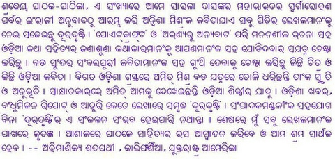
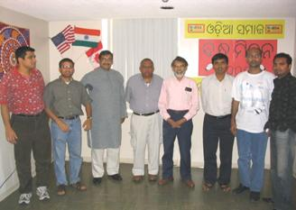
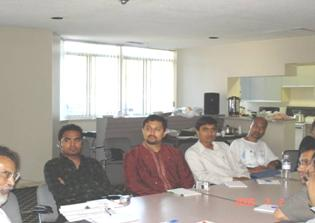

To Download PDF Version of Duradrusti Today click here

|
|||
| DuraDrusti.Org - The Journal of Odia Samaja | date 15 Agugust 2005 / Volume 3, Issue 2 | ||
|
EDITORIAL  |
|
||
|
COVER PAGE ARTICLE
Sarala Dasa was the first great poet of oDishA. He was a
contemporary of the Emperor Kapilendra Deb of the Sun Dynasty (1452-1479).
His epic 'Mahabharata' was broadly modelled on the Sanskrit original. But
Sarala Dasa made many changes and many variations, and his work was an
intimate document of contemporary oDiA life and language, and is a
powerful work of art. Sarala's 'Mahabharata' has not yet been properly
edited, and it lies scattered in palm leaf manuscripts in many parts of
oDishA, The following extract has been taken from the palm-leaf
manuscripts in the collection of Sri Gopinath Mohanty. Sri Mohanty has
himself translated them into English
[Read more] The Pansy Story : When I lived in Chicago, I had a small garden in my back yard. At that time, my then six year old daughter, Seema, would help me in the garden often. Every summer, to save money and to have some fresh vegetables, I would plant lots of vegetables – tomatoes, cucumbers,peppers, pole beans, Methi sag, eggplant and whatever else I thought might thrive in our big rectangle of dirt. I bought small tomato and pepper plants and also packets of seeds [Read More] Joy and Heartache in Orissa: Imagine the scene – a community hall in the heart of Bhubaneswar with a gathering of a hundred odd invited representatives of the civil society. We await the arrival of the Secretary of Urban Development Department. The objective is public consultation regarding the formation of ‘Eco Clubs’ with a noble purpose – to see a cleaner Bhubaneswar. [Read More] A former coal Secretary to Government of India shares his view on POSCO: I would like to view the POSCO project as the opportunity of the century. The crescendo of protests and apprehensions notwithstanding, I would still like to view it that way only. Apart from being the largest foreign investment in the country, the facility will ultimately be the largest steel project in the country. [Read More] DISABLED WOMEN AND RIGHTS VIOLATIONS: My paper reflects a general view of an old existing problem, though quite unknown, which affects an important number of disabled women; that of being the object of violent actions. I have tried to structure it as to accomplish two objectives [Read More] Biomedical Aspects of Aging: Aging is described as the process of deterioration of functions of various organs that occurs in an organism after it attains adulthood. This is followed by increasing probability of death. Human longevity is increasing rapidly in all countries due largely to the advances in medical sciences and health awareness of people. [Read More] PARADIGM SHIFT: A father of an economically stable family wishes that his son knew what was it to have a true soul; he took him to a very country side of the continent, in his vacation. In the deep of a hill, with a farmer’s family and wild cattle etc, they spent five days and four nights, in its house of the field. [Read More] GLIMPSES OF BAGHA JATIN: Aristotle thought that - to be appreciated by men - a subject should neither be too big, nor too small. In the case of Bagha Jatin, the unusually rich and complex character has been trimmed to an over-simplified stature of a martyr who had happened to kill a tiger in a wrestling bout. On reviewing, however, a thesis on Bagha Jatin, a French historian was reminded of an opera by Giuseppe Verdi. M.N. Roy believed that the battle of Balasore itself - where Jatin fought and died - had enough grandeur of an epic, with the drama woven around the man, his character, his personality. [Read More] Editor: Ahimanikya Satapathy |
|||
| ODIA ARICLES |
Duradrusti has established itself as one of the oDiA e-magazine in the globe. As it is growing day by day, it is getting filled up with the richness of its quality as well as quantity. More oDiA literature, cultures & heritages are reflected on it, which is not only satisfying its own self, but also is giving a clear vision to its readers all around the world...[Read more] Padmashri Prof MS Kanungo: An oDiA; taught in Ravenshaw.
After establishing himself firmly in Indian academia, he was pivotal in
persuading Biju Babu to establish a high-quality biological research
institute in Orissa. That is how the Institute of Life Sciences (ILSc) came
into existence. He was the founder-Director of ILSc for initial five years
during which, despite old age and aging health, he used to divide his time
between BHU and Bhubaneswar, 2 weeks at each place each month. The institute
already had world-class facilities when he quit it, may be in 1996-97. It
was founded and funded by Govt of Orissa, but a couple of years ago (since
after Biju Babu, the state funding to ILSc declined alarmingly) he made all
efforts to persuade DBT (Department of Biotechnology, Govt of India) to take
it over.They are a good bunch of dedicated workers. So to say, ILSc is his
contribution to Orissa. It is up to the existing staff how much they can
make Orissa proud of it. [Read
More] MY VIEWS ON ODISHA BIKASHA INITIATIVE (OBI) AND ITS OPERATION
Very recently on the July long weekend I had a chance to attend the “Bandhu
Milana” organized by the oDia samAja in Toronto. That gave me a chance to
get to know a bit about oDia samAja. Out of their many activities that they
are currently doing or proposing to do; the one that touched me the most and
generated a lot of interest is the concept of oDishA Bikasha Initiative in
short “OBI” and hence I thought of writing a few lines on this subject. |
||
|
Last Six months for oDiA and oDishA
•
Tsunami and Orissa:
The deadly December tsunami triggered in Indian Ocean affected – several
countries and tens of thousands of people. It brought back the memory of
Supper cyclone to the Oriyas. Total 240 Oriyas were reported missing
•
The dream
of • Killer heat wave: The killer heat wave which has stared from 1998, this year claimed 294 deaths in different parts of the state. The mercury remained above 45 degree Celsius in almost all parts of the state including capital Bhubaneswar for more than weeks.
•
Awards and
|
Bandhu miLana 2005: A Memory to Carry On The much awaited bandhu miLana of oDiA samAja was held on the 2nd of July in Toronto. After Kansas City in 2001, this exciting event was our second annual meeting. oDiA samAja (oDisA) members from Alaska to California have undergone immense pain and expenses to make this event a success. The first half was an intense round table discussion on the oDiA samAja organization, the recently presented constitution, recapping the past, and looking into the future. This round table was a clincher everyone present got involved. The participation was synergetic and filed with enthusiasm.
 The second half was to Odisha Bikasha Initiative. The round table was filled with excitement about the objectives and future of OBI.  Words are impossible to capture the
enthusiasm and spirit of what transpired. However, it is hoped photographs
taken by diligent volunteers, and uploaded to
http://www.odiya.org/convention/2005/album, may reveal some amount of
the events energy. [Read
More] |
||
| DuraDrusti.Org - The Journal of Odia Samaja Designed by Ahimanikya Satapathy | |||
| To Download PDF Version of Duradrusti Today click here | |||